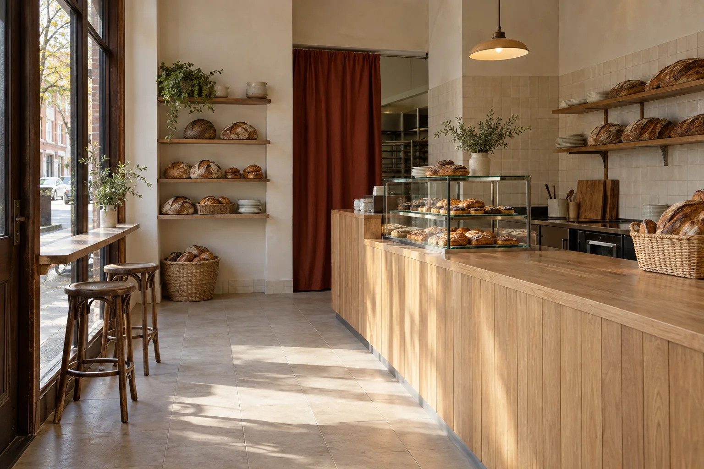

Give the counter two clear moments.
A compact display anchors ordering at one end. A clear landing at the other provides an intended collection position, leaving the middle of the room readable.
For the fictional Morning Fold bakery, the counter needed to welcome the morning rush without letting the room become a queue. The design starts with ordering, collection and a place to pause.

A little more ease at the morning counter.
A compact front-of-house area had to make room for a small display, an everyday wait and two familiar stools by the window. The brief separates the intended ordering and collection positions before choosing the finishes.
A compact display anchors ordering at one end. A clear landing at the other provides an intended collection position, leaving the middle of the room readable.
The retained stools sit at a narrow ledge near the original glazing. The central floor is left clear in the concept rather than filled with more tables.
Pale oak, cream tile and a rust-red textile accent let the bread display stay the focus. Materials are a design direction to resolve with the operator and appointed specialists.
Counter front direction
Working wall direction
Textile accent
The retained stools
These original colour and texture studies describe a direction. They are not physical samples, supplier products, technical specifications or performance claims.
Front-of-house brief, layout options, material schedule and counter design-intent drawings for the defined 38 m² area.
Confirm ordering and collection habits, operator requirements and the split between design, supply and build allowances.
The operator and appointed specialists resolve food-premises, access, services, approval and fabrication requirements outside this interior design scope.
Original hospitality concept, 2026. Morning Fold is fictional. This is not a certified food-premises layout or a claim of operational compliance.